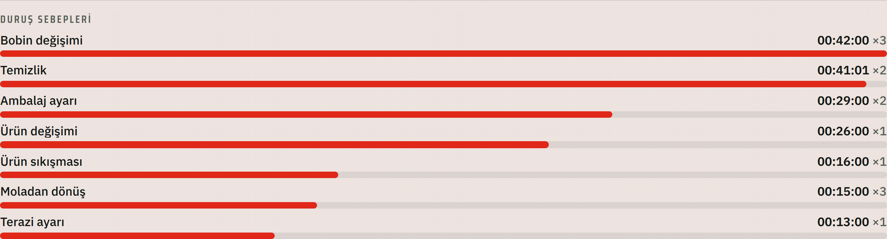
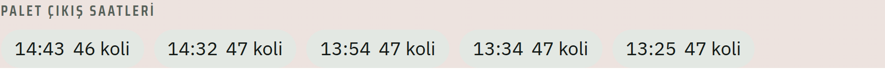

Her şeyin çözüldüğünü değil.
Kağıtta değil. Şu anda, gerçek verilerle çalışıyor.
Aktif, gerçek verilerle çalışıyor.
Aktif, gerçek verilerle çalışıyor.
Aktif, gerçek verilerle çalışıyor.
Şimdi (3 hat): 3 hatta her duruş iki ayrı oranla görülüyor — arızadan mı durdu, yavaşlamadan mı kaybetti. Bu ayrım daha önce yoktu.

Şimdi (3 hat): 3 hatta her palet hangi vardiya/ürün/saatle üretildiği kayıtlı — geriye dönük aranabiliyor.

Vardiya başında planlar amirin odasında, kağıt yoluyla dağıtılır. Operatör makineye gidene kadar personel ya da malzeme eksikliğini göremez — fark ettiğinde amire gidip çözüm aramak zaman kaybettirir.
Operatör doğrudan makineye gider, üretime başlar. Bir eksiklik/aksaklık görürse anında sisteme girer, çözüm hızlanır.
Kağıt, müdürün masasına vardiya bitiminde ulaşır.
Panoda anında görülür — amir ya da yönetici, fabrikada olsun olmasın, anında müdahale edebilir.
Üretim planları sistem üzerinden tanımlansın, planlama birimi üretimi anlık izleyip revizeyi dinamik şekillendirsin.
Veri girişi operatörünün elle aktardığı veriler, makineden doğrudan ve otomatik gelsin.
Kart okuma verisiyle devamsızlık kaynaklı eksik personel doğrudan sistemde görünsün.
Mevcut altyapı (Supabase/Vercel) sıfıra yakın ek maliyetle çalışıyor.
Pilot aşamada kullanıcı girişi ve yetkilendirme bilerek basit tutuldu — hız kazanmak için.